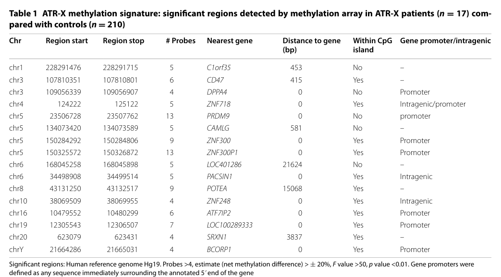

Ask a research question about Alpha-thalassemia X-linked intellectual disability syndrome. OpenScientist will conduct autonomous deep research using the Disorder Mechanisms Knowledge Base and PubMed literature (typically 10-30 minutes).
Do not include personal health information in your question. Questions and results are cached in your browser's local storage.
name: Alpha-thalassemia X-linked intellectual disability syndrome
creation_date: "2026-06-03T00:00:00Z"
category: Mendelian
parents:
- Genetic Disease
- Nervous System Disease
disease_term:
preferred_term: ATR-X syndrome
term:
id: MONDO:0010519
label: alpha thalassemia-X-linked intellectual disability syndrome
references:
- reference: PMID:20301622
title: "Alpha-Thalassemia X-Linked Intellectual Disability Syndrome."
tags:
- GeneReviews
pathophysiology:
- name: ATRX Chromatin Remodeler Loss of Function
description: >
ATR-X syndrome is caused by hemizygous loss-of-function variants in ATRX
(Xq21.1), which encodes a member of the SWI2/SNF2 family of ATP-dependent
chromatin-remodeling proteins. ATRX carries an ADD (ATRX-DNMT3-DNMT3L)
plant-homeodomain-like zinc finger that reads the H3K9me3 heterochromatin
mark and a SNF2-type helicase/ATPase domain. Diverse missense and truncating
mutations disrupt either chromatin targeting or remodeling activity, leading
to a "global transcriptional regulator" defect that dysregulates many genes,
including the alpha-globin genes, which explains the multisystem ATR-X
phenotype.
cell_types:
- preferred_term: neuron
term:
id: CL:0000540
label: neuron
biological_processes:
- preferred_term: chromatin remodeling
term:
id: GO:0006338
label: chromatin remodeling
modifier: DECREASED
- preferred_term: regulation of DNA-templated transcription
term:
id: GO:0006355
label: regulation of DNA-templated transcription
modifier: ABNORMAL
evidence:
- reference: PMID:7697714
reference_title: "Mutations in a putative global transcriptional regulator cause X-linked mental retardation with alpha-thalassemia (ATR-X syndrome)."
supports: SUPPORT
evidence_source: HUMAN_CLINICAL
snippet: "We have shown that ATR-X results from diverse mutations of XH2, a member of a subgroup of the helicase superfamily that includes proteins involved in a wide range of cellular functions, including DNA recombination and repair (RAD16, RAD54, and ERCC6) and regulation of transcription (SW12/SNF2, MOT1, and brahma)."
explanation: >
The original Gibbons et al. report identified ATRX (XH2) as a SWI2/SNF2-family
helicase whose mutation causes ATR-X syndrome, establishing the chromatin-
regulation defect.
- reference: PMID:7697714
reference_title: "Mutations in a putative global transcriptional regulator cause X-linked mental retardation with alpha-thalassemia (ATR-X syndrome)."
supports: SUPPORT
evidence_source: HUMAN_CLINICAL
snippet: "The complex ATR-X phenotype suggests that XH2, when mutated, down-regulates expression of several genes, including the alpha-globin genes, indicating that it could be a global transcriptional regulator."
explanation: >
Directly supports the model that loss of ATRX function dysregulates many
genes, including alpha-globin, producing the multisystem phenotype.
downstream:
- target: ATRX/DAXX-Mediated H3.3 Deposition at Heterochromatin
causal_link_type: DIRECT
description: >
Loss of ATRX chromatin-remodeling function destabilizes the ATRX-DAXX
complex and impairs H3.3 deposition at heterochromatic regions.
- target: Tandem-Repeat Binding and Allele-Specific Gene Dysregulation
causal_link_type: DIRECT
description: >
Loss of ATRX disrupts its binding to G-rich tandem repeats, causing
allele-specific gene dysregulation including alpha-globin downregulation.
- target: Impaired Sertoli Cell Survival and Androgen Signaling
causal_link_type: DIRECT
description: >
ATRX loss in the Sertoli cell lineage causes cell-cycle arrest,
apoptosis, and impaired androgen receptor co-activation.
- target: Impaired Oligodendrocyte Differentiation and CNS Myelination
causal_link_type: DIRECT
description: >
ATRX loss impairs oligodendrocyte progenitor differentiation along the
oligodendrocyte lineage, producing CNS myelination deficits.
- name: ATRX/DAXX-Mediated H3.3 Deposition at Heterochromatin
description: >
ATRX partners with the histone chaperone DAXX to deposit the
replication-independent histone variant H3.3 at heterochromatic and
repetitive genomic regions (pericentromeric heterochromatin, telomeres,
and tandem repeats), maintaining the H3K9me3 silencing mark. ATRX
localizes to promyelocytic leukemia (PML) nuclear bodies as part of this
complex. Loss of ATRX destabilizes the ATRX-DAXX complex and impairs
heterochromatin maintenance and proper silencing of repetitive elements.
cell_types:
- preferred_term: neuron
term:
id: CL:0000540
label: neuron
biological_processes:
- preferred_term: heterochromatin organization
term:
id: GO:0070828
label: heterochromatin organization
modifier: DECREASED
- preferred_term: nucleosome assembly
term:
id: GO:0006334
label: nucleosome assembly
modifier: DECREASED
evidence:
- reference: PMID:12953102
reference_title: "The ATRX syndrome protein forms a chromatin-remodeling complex with Daxx and localizes in promyelocytic leukemia nuclear bodies."
supports: SUPPORT
evidence_source: IN_VITRO
snippet: "Taken together, the results suggest that ATRX functions in conjunction with Daxx in a novel chromatin-remodeling complex. The defects in ATRX syndrome may result from inappropriate expression of genes controlled by this complex."
explanation: >
Establishes the ATRX-DAXX chromatin-remodeling complex and links its
dysfunction to the gene-expression defects of ATR-X syndrome.
- reference: PMID:12953102
reference_title: "The ATRX syndrome protein forms a chromatin-remodeling complex with Daxx and localizes in promyelocytic leukemia nuclear bodies."
supports: SUPPORT
evidence_source: IN_VITRO
snippet: "a proportion of ATRX and Daxx colocalize in promyelocytic leukemia nuclear bodies, with which Daxx had previously been located"
explanation: >
Documents ATRX/DAXX colocalization in PML nuclear bodies, part of the
complex's heterochromatin-associated localization.
- reference: PMID:26773061
reference_title: "New players in heterochromatin silencing: histone variant H3.3 and the ATRX/DAXX chaperone."
supports: SUPPORT
evidence_source: OTHER
snippet: "We provide an overview of the individual components (ATRX, DAXX and/or H3.3) tested in each study and propose a model where the ATRX/DAXX chaperone complex deposits H3.3 to maintain the H3K9me3 modification at heterochromatin throughout the genome."
explanation: >
Reviews the mechanistic model that the ATRX/DAXX chaperone deposits H3.3
to maintain the H3K9me3 heterochromatin mark genome-wide.
- reference: PMID:28293299
reference_title: "Identification of epigenetic signature associated with alpha thalassemia/mental retardation X-linked syndrome."
supports: SUPPORT
evidence_source: HUMAN_CLINICAL
snippet: "differentially methylated regions showed evidence of preferential clustering in pericentromeric and telometric chromosomal regions, areas where ATRX has multiple functions related to maintenance of heterochromatin and genomic integrity"
explanation: >
A peripheral-blood DNA methylation epi-signature in ATR-X patients shows
differential methylation clustered at pericentromeric and telomeric
regions, consistent with ATRX's role in heterochromatin maintenance.
downstream:
- target: Tandem-Repeat Binding and Allele-Specific Gene Dysregulation
causal_link_type: DIRECT
description: >
Impaired ATRX/DAXX-mediated heterochromatin maintenance at tandem-repeat
regions is the mechanistic bridge to allele-specific dysregulation of
genes embedded in those repeats.
- name: Tandem-Repeat Binding and Allele-Specific Gene Dysregulation
description: >
ATRX binds G-rich tandem-repeat (TR) sequences in telomeres and euchromatin,
including sequences predicted to form non-B DNA structures such as
G-quadruplexes. When ATRX is mutated, genes associated with these TRs are
dysregulated in a size-dependent manner, producing skewed allelic
expression. This mechanism accounts for the variable phenotypes seen with
identical ATRX mutations and the down-regulation of alpha-globin, which is
embedded in a TR-rich subtelomeric region.
cell_types:
- preferred_term: erythroid lineage cell
term:
id: CL:0000764
label: erythroid lineage cell
- preferred_term: neuron
term:
id: CL:0000540
label: neuron
biological_processes:
- preferred_term: regulation of DNA-templated transcription
term:
id: GO:0006355
label: regulation of DNA-templated transcription
modifier: ABNORMAL
evidence:
- reference: PMID:21029860
reference_title: "ATR-X syndrome protein targets tandem repeats and influences allele-specific expression in a size-dependent manner."
supports: SUPPORT
evidence_source: IN_VITRO
snippet: "Here we show that ATRX binds to tandem repeat (TR) sequences in both telomeres and euchromatin. Genes associated with these TRs can be dysregulated when ATRX is mutated, and the change in expression is determined by the size of the TR, producing skewed allelic expression."
explanation: >
Demonstrates ATRX binding to tandem-repeat sequences and size-dependent
dysregulation of associated genes when ATRX is mutated.
- reference: PMID:21029860
reference_title: "ATR-X syndrome protein targets tandem repeats and influences allele-specific expression in a size-dependent manner."
supports: SUPPORT
evidence_source: IN_VITRO
snippet: "Many of the TRs are G rich and predicted to form non-B DNA structures (including G-quadruplex) in vivo. We show that ATRX binds G-quadruplex structures in vitro, suggesting a mechanism by which ATRX may play a role in various nuclear processes and how this is perturbed when ATRX is mutated."
explanation: >
Supports the G-quadruplex/non-B DNA binding mechanism underlying ATRX's
role at repetitive regions and its perturbation in disease.
- name: Impaired Sertoli Cell Survival and Androgen Signaling
description: >
ATRX is required in the supporting (Sertoli) cell lineage of the developing
testis. In a Sertoli-cell-specific Atrx knockout mouse, proliferating
Sertoli cells undergo a prolonged G2/M phase and apoptosis during fetal
life, producing small testes and spermatogenesis defects. ATRX physically
interacts with the androgen receptor (AR) and co-activates AR target genes,
providing a tissue-specific mechanism for the genital and urogenital
anomalies (hypospadias, undescended testes, ambiguous genitalia) of ATR-X
syndrome.
cell_types:
- preferred_term: Sertoli cell
term:
id: CL:0000216
label: Sertoli cell
biological_processes:
- preferred_term: regulation of DNA-templated transcription
term:
id: GO:0006355
label: regulation of DNA-templated transcription
modifier: ABNORMAL
evidence:
- reference: PMID:21427128
reference_title: "Defective survival of proliferating Sertoli cells and androgen receptor function in a mouse model of the ATR-X syndrome."
supports: SUPPORT
evidence_source: MODEL_ORGANISM
snippet: "ScAtrxKO mice developed small testes and discontinuous tubules, due to prolonged G2/M phase and apoptosis of proliferating Sertoli cells during fetal life."
explanation: >
Mouse model shows that Sertoli-cell-specific Atrx loss causes the cellular
basis (cell-cycle arrest and apoptosis) for testicular hypoplasia.
- reference: PMID:21427128
reference_title: "Defective survival of proliferating Sertoli cells and androgen receptor function in a mouse model of the ATR-X syndrome."
supports: SUPPORT
evidence_source: MODEL_ORGANISM
snippet: "These data suggest that ATRX can directly enhance the expression of androgen-dependent genes through physical interaction with AR."
explanation: >
Links ATRX to androgen-receptor-dependent transcription, a mechanism for
the genital/urogenital anomalies seen in ATR-X syndrome.
- name: Impaired Oligodendrocyte Differentiation and CNS Myelination
description: >
ATRX promotes oligodendrocyte progenitor cell (OPC) differentiation along
the oligodendrocyte lineage and suppresses astrogliogenesis. In male mice,
loss of ATRX causes CNS myelination deficits, with OPCs failing to
differentiate and instead acquiring a more plastic state favoring astrocytic
differentiation. ATRX also acts systemically via thyroxine to regulate the
onset of myelination. These functions provide a mechanism for the white
matter pathology observed in ATR-X syndrome patients.
cell_types:
- preferred_term: oligodendrocyte precursor cell
term:
id: CL:0002453
label: oligodendrocyte precursor cell
- preferred_term: oligodendrocyte
term:
id: CL:0000128
label: oligodendrocyte
biological_processes:
- preferred_term: oligodendrocyte differentiation
term:
id: GO:0048709
label: oligodendrocyte differentiation
modifier: DECREASED
- preferred_term: myelination
term:
id: GO:0042552
label: myelination
modifier: DECREASED
evidence:
- reference: PMID:37925436
reference_title: "Systemic and intrinsic functions of ATRX in glial cell fate and CNS myelination in male mice."
supports: SUPPORT
evidence_source: MODEL_ORGANISM
snippet: "We show that loss of ATRX leads to myelination deficits in male mice that are partially rectified upon systemic thyroxine administration."
explanation: >
Mouse model demonstrates that ATRX loss causes CNS myelination deficits,
providing a mechanism for white matter pathology in ATR-X syndrome.
- reference: PMID:37925436
reference_title: "Systemic and intrinsic functions of ATRX in glial cell fate and CNS myelination in male mice."
supports: SUPPORT
evidence_source: MODEL_ORGANISM
snippet: "OPCs lacking ATRX fail to differentiate along the oligodendrocyte lineage and acquire a more plastic state that favors astrocytic differentiation in vitro and in vivo."
explanation: >
Demonstrates the OPC-intrinsic role of ATRX in promoting oligodendrocyte
differentiation and suppressing astrogliogenesis.
phenotypes:
- category: Phenotypic
name: Intellectual Disability
description: >
Mild-to-profound developmental delay / intellectual disability is a defining
feature of ATR-X syndrome in affected males.
frequency: VERY_FREQUENT
phenotype_term:
preferred_term: Intellectual disability
term:
id: HP:0001249
label: Intellectual disability
evidence:
- reference: PMID:20301622
reference_title: "Alpha-Thalassemia X-Linked Intellectual Disability Syndrome."
supports: SUPPORT
evidence_source: HUMAN_CLINICAL
snippet: "Alpha-thalassemia X-linked intellectual disability (ATR-X) syndrome is characterized by distinctive craniofacial features, genital anomalies, hypotonia, and mild-to-profound developmental delay / intellectual disability (DD/ID)."
explanation: >
GeneReviews lists intellectual disability as a core characteristic of the
syndrome.
- category: Phenotypic
name: Global Developmental Delay
description: >
Affected males show mild-to-profound developmental delay affecting motor and
cognitive milestones.
frequency: VERY_FREQUENT
phenotype_term:
preferred_term: Global developmental delay
term:
id: HP:0001263
label: Global developmental delay
evidence:
- reference: PMID:20301622
reference_title: "Alpha-Thalassemia X-Linked Intellectual Disability Syndrome."
supports: SUPPORT
evidence_source: HUMAN_CLINICAL
snippet: "mild-to-profound developmental delay / intellectual disability (DD/ID)"
explanation: >
GeneReviews documents developmental delay as a defining feature.
- category: Phenotypic
name: Hypotonia
description: >
Generalized hypotonia is a consistent feature of ATR-X syndrome.
frequency: VERY_FREQUENT
phenotype_term:
preferred_term: Hypotonia
term:
id: HP:0001252
label: Hypotonia
evidence:
- reference: PMID:20301622
reference_title: "Alpha-Thalassemia X-Linked Intellectual Disability Syndrome."
supports: SUPPORT
evidence_source: HUMAN_CLINICAL
snippet: "is characterized by distinctive craniofacial features, genital anomalies, hypotonia, and mild-to-profound developmental delay"
explanation: >
GeneReviews lists hypotonia among the characterizing features.
- category: Phenotypic
name: Distinctive Craniofacial Features
description: >
A recognizable facial gestalt with telecanthus/widely spaced eyes, a short
triangular nose, tented upper lip, and thick or everted lower lip, which
coarsens over time.
frequency: VERY_FREQUENT
phenotype_term:
preferred_term: Distinctive craniofacial features
term:
id: HP:0001999
label: Abnormal facial shape
evidence:
- reference: PMID:20301622
reference_title: "Alpha-Thalassemia X-Linked Intellectual Disability Syndrome."
supports: SUPPORT
evidence_source: HUMAN_CLINICAL
snippet: "Craniofacial abnormalities include small head circumference, telecanthus or widely spaced eyes, short triangular nose, tented upper lip, and thick or everted lower lip with coarsening of the facial features over time."
explanation: >
GeneReviews details the characteristic craniofacial features of ATR-X
syndrome.
- category: Phenotypic
name: Telecanthus
description: >
Increased distance between the inner canthi (telecanthus / widely spaced
eyes) is part of the characteristic facial appearance.
phenotype_term:
preferred_term: Telecanthus
term:
id: HP:0000506
label: Telecanthus
evidence:
- reference: PMID:20301622
reference_title: "Alpha-Thalassemia X-Linked Intellectual Disability Syndrome."
supports: SUPPORT
evidence_source: HUMAN_CLINICAL
snippet: "telecanthus or widely spaced eyes, short triangular nose, tented upper lip"
explanation: >
GeneReviews lists telecanthus as a craniofacial feature.
- category: Phenotypic
name: Everted Lower Lip
description: >
A thick or everted lower lip vermilion is a recognizable facial feature.
phenotype_term:
preferred_term: Everted lower lip vermilion
term:
id: HP:0000232
label: Everted lower lip vermilion
evidence:
- reference: PMID:20301622
reference_title: "Alpha-Thalassemia X-Linked Intellectual Disability Syndrome."
supports: SUPPORT
evidence_source: HUMAN_CLINICAL
snippet: "tented upper lip, and thick or everted lower lip with coarsening of the facial features over time"
explanation: >
GeneReviews describes the thick/everted lower lip as part of the facial
gestalt.
- category: Phenotypic
name: Microcephaly
description: >
Small head circumference (microcephaly) is part of the craniofacial
presentation.
phenotype_term:
preferred_term: Microcephaly
term:
id: HP:0000252
label: Microcephaly
evidence:
- reference: PMID:20301622
reference_title: "Alpha-Thalassemia X-Linked Intellectual Disability Syndrome."
supports: SUPPORT
evidence_source: HUMAN_CLINICAL
snippet: "Craniofacial abnormalities include small head circumference"
explanation: >
GeneReviews documents small head circumference (microcephaly) among the
craniofacial abnormalities.
- category: Phenotypic
name: Ambiguous Genitalia
description: >
Genital anomalies in 46,XY males span a spectrum that, at its severe end,
includes ambiguous genitalia and normal-appearing female external genitalia
(with hypospadias and cryptorchidism captured as separate phenotypes).
frequency: VERY_FREQUENT
phenotype_term:
preferred_term: Ambiguous genitalia
term:
id: HP:0000062
label: Ambiguous genitalia
evidence:
- reference: PMID:20301622
reference_title: "Alpha-Thalassemia X-Linked Intellectual Disability Syndrome."
supports: SUPPORT
evidence_source: HUMAN_CLINICAL
snippet: "genital anomalies comprise a range from hypospadias and undescended testicles, to severe hypospadias and ambiguous genitalia, to normal-appearing female external genitalia"
explanation: >
GeneReviews describes the spectrum of genital anomalies, including
ambiguous genitalia.
- category: Phenotypic
name: Hypospadias
description: >
Hypospadias is a common urogenital manifestation in affected males.
phenotype_term:
preferred_term: Hypospadias
term:
id: HP:0000047
label: Hypospadias
evidence:
- reference: PMID:20301622
reference_title: "Alpha-Thalassemia X-Linked Intellectual Disability Syndrome."
supports: SUPPORT
evidence_source: HUMAN_CLINICAL
snippet: "a range from hypospadias and undescended testicles, to severe hypospadias and ambiguous genitalia"
explanation: >
GeneReviews lists hypospadias as a genital anomaly in ATR-X syndrome.
- category: Phenotypic
name: Cryptorchidism
description: >
Undescended testicles (cryptorchidism) occur within the spectrum of genital
anomalies.
phenotype_term:
preferred_term: Cryptorchidism
term:
id: HP:0000028
label: Cryptorchidism
evidence:
- reference: PMID:20301622
reference_title: "Alpha-Thalassemia X-Linked Intellectual Disability Syndrome."
supports: SUPPORT
evidence_source: HUMAN_CLINICAL
snippet: "a range from hypospadias and undescended testicles"
explanation: >
GeneReviews documents undescended testicles among genital anomalies.
- category: Phenotypic
name: Alpha-Thalassemia with HbH Hemoglobin
description: >
A mild alpha-thalassemia, observed in about 75% of affected individuals, is
a hallmark of ATR-X syndrome and reflects ATRX-dependent down-regulation of
alpha-globin expression. It is detectable as HbH (beta4) inclusions in red
cells and typically does not require treatment.
frequency: FREQUENT
phenotype_term:
preferred_term: HbH hemoglobin
term:
id: HP:0011903
label: HbH hemoglobin
evidence:
- reference: PMID:20301622
reference_title: "Alpha-Thalassemia X-Linked Intellectual Disability Syndrome."
supports: SUPPORT
evidence_source: HUMAN_CLINICAL
snippet: "Alpha-thalassemia, observed in about 75% of affected individuals, is mild and typically does not require treatment."
explanation: >
GeneReviews reports alpha-thalassemia in ~75% of affected individuals,
supporting both the phenotype and a FREQUENT frequency band.
- reference: PMID:7697714
reference_title: "Mutations in a putative global transcriptional regulator cause X-linked mental retardation with alpha-thalassemia (ATR-X syndrome)."
supports: SUPPORT
evidence_source: HUMAN_CLINICAL
snippet: "The ATR-X syndrome is an X-linked disorder comprising severe psychomotor retardation, characteristic facial features, genital abnormalities, and alpha-thalassemia."
explanation: >
Foundational clinical description listing alpha-thalassemia as a core
component of the syndrome.
- category: Phenotypic
name: Seizures
description: >
Seizures occur in a subset of affected individuals and are managed per
standard of care.
phenotype_term:
preferred_term: Seizure
term:
id: HP:0001250
label: Seizure
evidence:
- reference: PMID:20301622
reference_title: "Alpha-Thalassemia X-Linked Intellectual Disability Syndrome."
supports: SUPPORT
evidence_source: HUMAN_CLINICAL
snippet: "Treatment of manifestations: DD/ID, seizures, gastrointestinal manifestations and feeding difficulties, excessive drooling, and genital anomalies are managed per standard of care."
explanation: >
GeneReviews lists seizures among the manifestations requiring management.
- category: Phenotypic
name: Feeding Difficulties
description: >
Gastrointestinal manifestations and feeding difficulties are common and
require management.
phenotype_term:
preferred_term: Feeding difficulties
term:
id: HP:0011968
label: Feeding difficulties
evidence:
- reference: PMID:20301622
reference_title: "Alpha-Thalassemia X-Linked Intellectual Disability Syndrome."
supports: SUPPORT
evidence_source: HUMAN_CLINICAL
snippet: "gastrointestinal manifestations and feeding difficulties, excessive drooling"
explanation: >
GeneReviews documents gastrointestinal manifestations and feeding
difficulties.
- category: Phenotypic
name: Drooling
description: >
Excessive drooling is a recognized manifestation requiring management.
phenotype_term:
preferred_term: Drooling
term:
id: HP:0002307
label: Drooling
evidence:
- reference: PMID:20301622
reference_title: "Alpha-Thalassemia X-Linked Intellectual Disability Syndrome."
supports: SUPPORT
evidence_source: HUMAN_CLINICAL
snippet: "feeding difficulties, excessive drooling, and genital anomalies are managed per standard of care"
explanation: >
GeneReviews lists excessive drooling among manifestations to manage.
- category: Phenotypic
name: Abnormal CNS Myelination
description: >
Myelination is compromised in ATR-X syndrome patients. Mouse studies link
ATRX loss to oligodendrocyte progenitor differentiation defects, providing a
mechanism for the white matter pathology observed in patients.
phenotype_term:
preferred_term: Abnormal myelination
term:
id: HP:0012447
label: Abnormal myelination
evidence:
- reference: PMID:37925436
reference_title: "Systemic and intrinsic functions of ATRX in glial cell fate and CNS myelination in male mice."
supports: SUPPORT
evidence_source: MODEL_ORGANISM
snippet: "Myelination is compromised in ATR-X intellectual disability syndrome patients, but the causes are unknown."
explanation: >
Establishes that myelination is compromised in ATR-X syndrome patients,
with the mechanism investigated in a mouse model.
- category: Phenotypic
name: Skeletal Anomalies
description: >
Skeletal abnormalities (e.g., limb anomalies, scoliosis/kyphosis) are
characteristic features of the ATR-X syndrome phenotype.
phenotype_term:
preferred_term: Skeletal anomalies
term:
id: HP:0000924
label: Abnormality of the skeletal system
evidence:
- reference: PMID:36292677
reference_title: "Phenotypic Spectrum and Molecular Findings in 17 ATR-X Syndrome Italian Patients: Some New Insights."
supports: SUPPORT
evidence_source: HUMAN_CLINICAL
snippet: "A typical phenotype is well defined, with cognitive impairment, characteristic facial dysmorphism, hypotonia, gastrointestinal, skeletal, urogenital, and hematological anomalies as characteristic features."
explanation: >
Cohort study lists skeletal anomalies among the characteristic features of
ATR-X syndrome.
- category: Phenotypic
name: Gastrointestinal Anomalies
description: >
Gastrointestinal anomalies, including dysmotility, constipation, and
gastroesophageal reflux, are characteristic features and a common source of
morbidity in ATR-X syndrome.
phenotype_term:
preferred_term: Gastrointestinal anomalies
term:
id: HP:0011024
label: Abnormality of the gastrointestinal tract
evidence:
- reference: PMID:36292677
reference_title: "Phenotypic Spectrum and Molecular Findings in 17 ATR-X Syndrome Italian Patients: Some New Insights."
supports: SUPPORT
evidence_source: HUMAN_CLINICAL
snippet: "with cognitive impairment, characteristic facial dysmorphism, hypotonia, gastrointestinal, skeletal, urogenital, and hematological anomalies as characteristic features"
explanation: >
Cohort study lists gastrointestinal anomalies among the characteristic
features of ATR-X syndrome, consistent with the GeneReviews note on GI
manifestations.
discussions:
- discussion_id: gap_atrx_osteosarcoma_tumor_predisposition
prompt: >-
Does germline ATRX loss-of-function confer a clinically meaningful tumor
predisposition (e.g., osteosarcoma) in ATR-X syndrome, and if so, through
which mechanism (ALT/telomere instability, heterochromatin/genome-integrity
failure, or a sporadic association)?
kind: KNOWLEDGE_GAP
status: OPEN
attaches_to:
- pathophysiology#ATRX/DAXX-Mediated H3.3 Deposition at Heterochromatin
rationale: >-
Somatic ATRX loss is a recurrent driver of the alternative lengthening of
telomeres (ALT) phenotype across multiple cancers, and GeneReviews notes
that osteosarcoma has been reported in a few males with germline ATRX
pathogenic variants. It remains unclear whether germline ATRX loss-of-
function meaningfully predisposes to osteosarcoma or other tumors in ATR-X
syndrome, and whether any such risk is mediated by the same heterochromatin/
genome-integrity functions captured by the ATRX/DAXX node. The entry does
not assert a tumor-predisposition phenotype because the association is rare
and the germline mechanism is unestablished.
evidence:
- reference: PMID:20301622
reference_title: "Alpha-Thalassemia X-Linked Intellectual Disability Syndrome."
supports: SUPPORT
evidence_source: HUMAN_CLINICAL
snippet: "Osteosarcoma has been reported in"
explanation: >
GeneReviews documents that osteosarcoma has been reported in a few males
with germline ATRX pathogenic variants, motivating this open question
about tumor predisposition in ATR-X syndrome.
genetic:
- name: ATRX pathogenic variants causing ATR-X syndrome
notes: >
ATR-X syndrome is caused by hemizygous pathogenic variants in ATRX (Xq21.1),
encoding a SWI2/SNF2-family ATP-dependent chromatin-remodeling protein.
Inheritance is X-linked; affected males have a normal 46,XY karyotype, and
carrier females are usually unaffected. Variants are diverse missense and
truncating changes.
gene_term:
preferred_term: ATRX
term:
id: hgnc:886
label: ATRX
inheritance:
- name: X-linked recessive
evidence:
- reference: PMID:20301622
reference_title: "Alpha-Thalassemia X-Linked Intellectual Disability Syndrome."
supports: SUPPORT
evidence_source: HUMAN_CLINICAL
snippet: "ATR-X syndrome is inherited in an X-linked manner."
explanation: >
Confirms the X-linked inheritance pattern.
evidence:
- reference: PMID:20301622
reference_title: "Alpha-Thalassemia X-Linked Intellectual Disability Syndrome."
supports: SUPPORT
evidence_source: HUMAN_CLINICAL
snippet: "The diagnosis of ATR-X syndrome is established in a proband with suggestive findings, a 46,XY karyotype, and a hemizygous pathogenic variant in ATRX identified by molecular genetic testing."
explanation: >
GeneReviews establishes ATRX as the causative gene with X-linked
hemizygous pathogenic variants.
treatments:
- name: Supportive and Developmental Management
description: >
There is no disease-modifying therapy. Management is supportive and per
standard of care: developmental/educational support for DD/ID, anti-seizure
medication for seizures, and management of gastrointestinal manifestations,
feeding difficulties, and excessive drooling.
treatment_term:
preferred_term: supportive care
term:
id: MAXO:0000950
label: supportive care
evidence:
- reference: PMID:20301622
reference_title: "Alpha-Thalassemia X-Linked Intellectual Disability Syndrome."
supports: SUPPORT
evidence_source: HUMAN_CLINICAL
snippet: "Treatment of manifestations: DD/ID, seizures, gastrointestinal manifestations and feeding difficulties, excessive drooling, and genital anomalies are managed per standard of care."
explanation: >
GeneReviews describes supportive, manifestation-directed management as the
standard of care.
- name: Surgical Correction of Genital Anomalies
description: >
Genital anomalies (e.g., hypospadias, undescended testicles) are managed per
standard of care, which may include corrective urologic/surgical procedures.
treatment_term:
preferred_term: surgical procedure
term:
id: MAXO:0000004
label: surgical procedure
evidence:
- reference: PMID:20301622
reference_title: "Alpha-Thalassemia X-Linked Intellectual Disability Syndrome."
supports: SUPPORT
evidence_source: HUMAN_CLINICAL
snippet: "feeding difficulties, excessive drooling, and genital anomalies are managed per standard of care"
explanation: >
GeneReviews indicates genital anomalies are managed per standard of care,
which includes surgical correction where indicated.
- name: Genetic Counseling
description: >
Because ATR-X syndrome is X-linked, genetic counseling is recommended.
Carrier testing for at-risk females, prenatal testing, and preimplantation
genetic testing are possible once the familial ATRX variant is known.
treatment_term:
preferred_term: genetic counseling
term:
id: MAXO:0000079
label: genetic counseling
evidence:
- reference: PMID:20301622
reference_title: "Alpha-Thalassemia X-Linked Intellectual Disability Syndrome."
supports: SUPPORT
evidence_source: HUMAN_CLINICAL
snippet: "Once the ATRX pathogenic variant in the family has been identified, carrier testing for at-risk females, prenatal testing for pregnancies at increased risk, and preimplantation genetic testing are possible."
explanation: >-
GeneReviews supports genetic counseling and family-based testing options.
ATR-X syndrome is a rare, X-linked, congenital/neurodevelopmental disorder caused by hypomorphic pathogenic variants in ATRX, encoding a chromatin-remodeling ATPase. Core manifestations include moderate-to-severe intellectual/developmental disability, characteristic facial dysmorphism, hypotonia, frequent genital anomalies, and variably α-thalassemia/HbH inclusions (often mild). (tillotson2023anewmouse pages 1-4, yuan2024mutantatrxpathogenesis pages 1-2, lupu2024pyridostigmineasa pages 1-2)
Direct abstract quote (2023 mouse-model paper summarizing the human syndrome): “Hypomorphic mutations in the X-linked ATRX gene cause a rare form of intellectual disability combined with alpha-thalassemia called ATR-X syndrome in hemizygous males. Patients also have facial dysmorphism, microcephaly, musculoskeletal defects and genital abnormalities.” (Tillotson et al., 2023; URL: https://doi.org/10.1101/2023.01.25.525394; publication year 2023) (tillotson2023anewmouse pages 1-4)
Most clinical knowledge is derived from published patient reports/series and aggregated disease resources/reviews, increasingly using WES/WGS-confirmed diagnoses rather than only clinical/hematologic patterns. (wang2024identificationofa pages 2-5, timpano2020neurodevelopmentaldisorderscaused pages 1-2)
Primary cause: germline pathogenic variants in ATRX (X-linked). ATRX encodes a chromatin remodeler/transcriptional regulator; mutations disrupt chromatin organization/localization and protein interactions (e.g., DAXX, EZH2, TERRA), contributing to chromosomal/genomic instability and transcriptional dysregulation. (yuan2024mutantatrxpathogenesis pages 1-2)
Direct abstract quote (2024 review): “These mutations disrupt the organization, subcellular localization, and transcriptional activity of ATRX, leading to chromosomal instability and affecting interactions with key regulatory proteins such as DAXX, EZH2, and TERRA.” (Yuan et al., 2024; URL: https://doi.org/10.3389/fmolb.2024.1434398; publication date Oct 2024) (yuan2024mutantatrxpathogenesis pages 1-2)
No established genetic/environmental protective factors were identified in the retrieved sources (gap noted).
No ATR-X–specific gene–environment interaction data were identified in the retrieved sources (gap noted).
Evidence includes both cohort series and structured literature reviews:
A 2024 BMC Pediatrics case report plus structured review of 63 patients/50 pathogenic variants reported that variant class correlates with certain features: epilepsy more frequent with frameshift/nonsense (57.14% and 55.56% respectively in their extracted dataset), and variants cluster in the ADD and helicase-like domains. (Wang et al., 2024; URL: https://doi.org/10.1186/s12887-024-05088-0; publication date Oct 2024) (wang2024identificationofa pages 2-5)
Direct standardized QoL instrument data (e.g., EQ-5D, SF-36) were not identified in the retrieved sources; however, GI dysmotility, seizures, and severe communication impairment are repeatedly emphasized as drivers of morbidity and care burden. (lupu2024pyridostigmineasa pages 2-3, timpano2020neurodevelopmentaldisorderscaused pages 1-2)
Example (2024): novel frameshift c.399_400dup (p.Leu134Cysfs*2) classified as likely pathogenic per ACMG (PVS1 + PM2-supporting) in an ATRX-related MRXHF1 case. (Wang et al., 2024; URL: https://doi.org/10.1186/s12887-024-05088-0; Oct 2024) (wang2024identificationofa pages 2-5)
No validated modifier genes for clinical variability were identified in the retrieved sources (gap noted).
Peripheral-blood DNA methylation profiling can detect a characteristic ATR-X episignature, consistent with ATRX’s role in heterochromatin/telomeric–pericentromeric regulation. (schenkel2017identificationofepigenetic pages 1-2)
Direct abstract quote: “We demonstrated the evidence of a unique and highly specific DNA methylation ‘epi-signature’ in the peripheral blood of ATRX patients…” (Schenkel et al., 2017; URL: https://doi.org/10.1186/s13072-017-0118-4; publication date Mar 2017) (schenkel2017identificationofepigenetic pages 1-2)
No specific environmental or infectious causal contributors are established for ATR-X syndrome in the retrieved sources; it is primarily a monogenic disorder. (yuan2024mutantatrxpathogenesis pages 1-2)
ATRX is a chromatin remodeling factor that participates in transcriptional regulation and genome stability/heterochromatin maintenance; pathogenic variants lead to dysregulated chromatin states and downstream transcriptional programs that impact neurodevelopment and other systems (hematopoietic, skeletal, urogenital, GI). (tillotson2023anewmouse pages 1-4, yuan2024mutantatrxpathogenesis pages 1-2)
CNS myelination mechanism (mouse): Loss of ATRX in male mice caused myelination deficits; thyroxine partially rectified deficits, and ATRX was shown to promote oligodendrocyte progenitor (OPC) differentiation and suppress astrogliogenesis. (Rowland et al., 2023; URL: https://doi.org/10.1038/s41467-023-42752-y; publication date Nov 2023) (vaisfeld2022phenotypicspectrumanda pages 5-7)
1) ATRX hypomorphic variant → 2) impaired chromatin remodeling/heterochromatin maintenance and altered interactions (e.g., DAXX/EZH2/TERRA) → 3) altered transcriptional programs and genomic stability → 4) neurodevelopmental impairment (ID, microcephaly), plus multisystem anomalies (urogenital development, GI dysmotility, skeletal phenotypes) and variable α-globin dysregulation causing α-thalassemia. (yuan2024mutantatrxpathogenesis pages 1-2, tillotson2023anewmouse pages 1-4, lupu2024pyridostigmineasa pages 1-2)
GO (Biological Process) suggestions: * Chromatin remodeling GO:0006338 * Regulation of transcription, DNA-templated GO:0006355 * DNA repair GO:0006281 * Oligodendrocyte differentiation GO:0048709 (for myelination mechanism)
CL (Cell Ontology) suggestions: * Oligodendrocyte progenitor cell CL:0002453 * Oligodendrocyte CL:0000128 * Neuron CL:0000540
ATRX dysfunction is linked to chromatin and heterochromatin organization; relevant cellular compartment terms include nucleus and chromatin-associated subcompartments. (yuan2024mutantatrxpathogenesis pages 1-2)
X-linked inheritance with predominant male phenotype; female carriers often have reduced penetrance/expressivity due to skewed X-inactivation. (yuan2024mutantatrxpathogenesis pages 1-2, cong2022identificationofa pages 1-2)
Published estimates vary: * 1/30,000–1/40,000 male newborns (Wang et al., 2024; URL: https://doi.org/10.1186/s12887-024-05088-0; Oct 2024) (wang2024identificationofa pages 1-2) * Incidence <1/100,000 live-born males and “more than 130 families and 200 affected individuals” (Lupu et al., 2024; URL: https://doi.org/10.3389/fped.2024.1460658; Dec 2024) (lupu2024pyridostigmineasa pages 1-2) * A broader rare-disease prevalence estimate <1–9 per 1,000,000 in a 2020 review (Timpano & Picketts, 2020; URL: https://doi.org/10.3389/fgene.2020.00885; Aug 2020) (timpano2020neurodevelopmentaldisorderscaused pages 1-2)
Interpretation: variability likely reflects evolving ascertainment and underdiagnosis, especially of ATRX allelic disorders without α-thalassemia. (timpano2020neurodevelopmentaldisorderscaused pages 1-2, wang2024identificationofa pages 2-5)
A clinically relevant diagnostic adjunct is the peripheral blood DNA methylation episignature: * Case-control comparison described as 18 patients vs 210 controls in the abstract, with hierarchical clustering separating ATR-X from controls and a set of highly informative loci (14–16 regions described). (Schenkel et al., 2017; URL: https://doi.org/10.1186/s13072-017-0118-4; Mar 2017) (schenkel2017identificationofepigenetic pages 1-2)
Key figure/table evidence for the episignature and loci: hierarchical clustering heatmap and locus table. (schenkel2017identificationofepigenetic media 15df1688, schenkel2017identificationofepigenetic media 9b890b99)
The retrieved sources emphasize overlap with MRXHF1 (ATRX allelic disorder without α-thalassemia), implying that absence of α-thalassemia does not exclude ATRX-related disease and supports a genotype-first diagnostic approach. (wang2024identificationofa pages 1-2, cong2022identificationofa pages 1-2)
Systematic survival curves and life expectancy estimates were not identified in the retrieved sources (gap noted). However, complication-related mortality is referenced: * “Aspiration is a common cause of death in early childhood.” (Lupu et al., 2024; URL: https://doi.org/10.3389/fped.2024.1460658; Dec 2024) (lupu2024pyridostigmineasa pages 1-2)
No established disease-modifying therapy is supported by the retrieved human clinical literature; management is multidisciplinary and supportive (developmental therapies, seizure management, feeding/GI management, urogenital evaluation). (wang2024identificationofa pages 2-5, lupu2024pyridostigmineasa pages 1-2)
A 2024 case report plus literature review suggests pyridostigmine (acetylcholinesterase inhibitor) may improve pediatric GI dysmotility in ATR-X, particularly when first-line approaches fail. (Lupu et al., 2024; URL: https://doi.org/10.3389/fped.2024.1460658; Dec 2024) (lupu2024pyridostigmineasa pages 2-3, lupu2024pyridostigmineasa pages 1-2)
Direct abstract quote: “We report a patient with ATR-X syndrome suffering from gastrointestinal dysmotility and highlight the beneficial effects of pyridostigmine.” (Lupu et al., 2024) (lupu2024pyridostigmineasa pages 2-3)
Reported data highlights include a case titrating from ~1.6 mg/kg/day to ~3.2 mg/kg/day with maintenance and reported full symptom resolution after 1 year, and a statement that only nine pediatric cases were reported in the literature at the time. (lupu2024pyridostigmineasa pages 2-3, lupu2024pyridostigmineasa pages 1-2)
In mice, thyroxine partially rectified myelination deficits caused by ATRX loss, suggesting endocrine contributions to white matter pathology; this remains preclinical and is not established as a human therapy for ATR-X syndrome. (Rowland et al., 2023; URL: https://doi.org/10.1038/s41467-023-42752-y; Nov 2023) (vaisfeld2022phenotypicspectrumanda pages 5-7)
Primary prevention is not applicable in the classic public-health sense for a monogenic disorder; prevention focuses on reproductive and complication prevention: * Carrier testing and genetic counseling for at-risk families; prenatal diagnosis discussed in recent genetic case literature. (cong2022identificationofa pages 1-2) * Tertiary prevention: aspiration prevention and proactive management of GI dysmotility/feeding issues may reduce morbidity. (lupu2024pyridostigmineasa pages 1-2, lupu2024pyridostigmineasa pages 2-3)
No naturally occurring ATR-X syndrome analogs in non-human species were identified in the retrieved sources (gap noted).
A 2023 patient-variant knock-in mouse model (Atrx R246C; described as the most common patient mutation) recapitulated aspects of the human disorder including craniofacial defects, microcephaly and impaired neurological function, providing a platform for mechanistic studies and therapy testing. (Tillotson et al., 2023; URL: https://doi.org/10.1101/2023.01.25.525394; 2023) (tillotson2023anewmouse pages 1-4)
ATRX loss in male mice led to myelination deficits; targeted inactivation experiments implicated both systemic (thyroxine) and cell-intrinsic OPC roles. (Rowland et al., 2023; URL: https://doi.org/10.1038/s41467-023-42752-y; Nov 2023) (vaisfeld2022phenotypicspectrumanda pages 5-7)
The following structured table summarizes identifiers, key frequencies, diagnostic highlights, and management evidence.
| Category | Details | Key evidence (with PMID if explicitly available in text; otherwise include DOI and year) | Notes |
|---|---|---|---|
| Disease name / identifiers | ATR-X syndrome; alpha-thalassemia X-linked intellectual disability syndrome; OMIM #301040. Related allelic/overlapping designation: MRXHF1, OMIM #309580. Orphanet identifier reported as ORPHA:847 in a 2024 review. | OMIM #301040 noted in multiple case/review sources; doi:10.3389/fped.2024.1460658 (2024); doi:10.1186/s12887-024-05088-0 (2024); doi:10.3389/fped.2022.834087 (2022); ORPHA:847 noted in doi:10.1051/medsci/2024181 (2024) (lupu2024pyridostigmineasa pages 1-2, wang2024identificationofa pages 1-2, cong2022identificationofa pages 1-2) | ICD/MeSH/MONDO identifiers were not directly available in retrieved context. |
| Common synonyms | Alpha-thalassemia/mental retardation syndrome, X-linked; alpha-thalassemia X-linked intellectual disability syndrome; ATR-X syndrome. | doi:10.3389/fped.2022.834087 (2022); doi:10.3389/fped.2024.1460658 (2024) (cong2022identificationofa pages 1-2, lupu2024pyridostigmineasa pages 1-2) | “Mental retardation” appears in legacy nomenclature but is outdated in current clinical usage. |
| Resource type | Disease information is derived mainly from aggregated disease-level resources/reviews and published patient case series/cohorts; recent reports often use WES/WGS-confirmed individual patients. | doi:10.1186/s12887-024-05088-0 (2024); doi:10.3390/genes13101792 (2022) (wang2024identificationofa pages 2-5, vaisfeld2022phenotypicspectrumanda pages 5-7) | Not primarily EHR-derived in the retrieved literature. |
| Inheritance / sex effect | X-linked inheritance; typically affects hemizygous males; females are often asymptomatic or milder because of skewed X-chromosome inactivation. | doi:10.3389/fmolb.2024.1434398 (2024); doi:10.3389/fped.2022.834087 (2022) (yuan2024mutantatrxpathogenesis pages 1-2, cong2022identificationofa pages 1-2) | Carrier mothers may show skewed XCI; counseling is important for family planning. |
| Causal gene | ATRX (OMIM *300032), located at Xq13-q21/Xq21.1; chromatin-remodeling ATPase of the SNF2 family; 35 exons; protein length 2,492 aa. | doi:10.3389/fped.2022.834087 (2022); doi:10.1101/2023.01.25.525394 (2023) (cong2022identificationofa pages 1-2, tillotson2023anewmouse pages 1-4) | Core domains: N-terminal ADD domain and C-terminal helicase/ATPase domain. |
| Variant spectrum | Predominantly hypomorphic germline variants; missense most common; also frameshift, nonsense, splice-site, and small in-frame indels. Variants cluster in ADD and helicase-like domains. In one 2024 review set: 35 missense, 7 frameshift, 4 nonsense, 5 splicing variants among 63 reviewed patients/50 pathogenic variants. | doi:10.1186/s12887-024-05088-0 (2024); doi:10.1101/2023.01.25.525394 (2023) (wang2024identificationofa pages 2-5, tillotson2023anewmouse pages 1-4) | Germline disease alleles are typically partial loss-of-function rather than null. |
| Prevalence / incidence | Estimated prevalence ~1/30,000–1/40,000 male newborns in one 2024 source; another review cites incidence <1/100,000 live-born males; broader rare-disease estimate <1–9/1,000,000. More than 130 families and >200 affected individuals/cases have been described. | doi:10.1186/s12887-024-05088-0 (2024); doi:10.3389/fped.2024.1460658 (2024); doi:10.3389/fgene.2020.00885 (2020) (wang2024identificationofa pages 1-2, lupu2024pyridostigmineasa pages 1-2, timpano2020neurodevelopmentaldisorderscaused pages 1-2) | Estimates vary by source and likely reflect underdiagnosis, especially of mild/atypical cases. |
| Core phenotype | Severe-to-profound intellectual/developmental disability is the constant feature; facial dysmorphism, hypotonia, skeletal abnormalities, genital anomalies, and hematologic abnormalities are typical. | doi:10.3389/fmolb.2024.1434398 (2024); doi:10.3389/fgene.2020.00885 (2020) (yuan2024mutantatrxpathogenesis pages 1-2, timpano2020neurodevelopmentaldisorderscaused pages 1-2) | Expressive language is often markedly impaired; some patients lack alpha-thalassemia. |
| Alpha-thalassemia / hematology | Alpha-thalassemia or HbH inclusions occur in about 75% of affected individuals, but may be absent; severity of neurodevelopmental impairment does not correlate well with degree of alpha-thalassemia. | doi:10.3389/fped.2024.1460658 (2024); doi:10.3389/fped.2021.811812 (2022); doi:10.1101/2023.01.25.525394 (2023) (lupu2024pyridostigmineasa pages 1-2, tillotson2023anewmouse pages 1-4) | Absence of alpha-thalassemia does not exclude ATRX-related disease. |
| Phenotype frequencies (selected literature) | Review data cited in 2022 source: profound ID 100%, characteristic facial features 100%, microcephaly ~75%, genital abnormalities ~63–67%, neonatal hypotonia 40%, short stature 50%, gut dysmotility ~36%, seizures ~36%, renal/urinary abnormalities ~25%. Italian 17-patient cohort: microcephaly 12/15 (80%), short stature 11/17 (64.5%), hand/foot anomalies 11/17 (64.5%), scoliosis/kyphosis 10/17 (59%), neuroimaging signs 10/17 (59%), obstructive sleep apnea 4/17 (23.5%), dysthyroidism 3/17 (17.5%), osteoporosis 3/17 (17.5%). | doi:10.3389/fped.2022.834087 (2022); doi:10.3390/genes13101792 (2022) (cong2022identificationofa pages 9-10, vaisfeld2022phenotypicspectrumanda pages 5-7) | Frequencies vary by cohort composition, ascertainment, and whether mild ATRX-related cases are included. |
| Genotype–phenotype highlights | Frameshift/nonsense variants may show higher rates of epilepsy and congenital anomalies; ADD-domain variants are associated with more severe psychomotor/language impairment; C-terminal frameshifts may confer more urogenital defects. | doi:10.1186/s12887-024-05088-0 (2024); doi:10.3389/fped.2022.834087 (2022) (wang2024identificationofa pages 2-5, cong2022identificationofa pages 9-10) | Current reviews caution that many domain-based predictions remain imperfect and not fully prognostic. |
| Natural history / onset | Congenital or early-infantile onset with global developmental delay, hypotonia, feeding/GI issues, and delayed motor/language milestones; aspiration is a recognized cause of early childhood death. Prenatal decreased fetal movements and preterm birth (~1/3 in one cohort) have been reported. | doi:10.3389/fped.2024.1460658 (2024); doi:10.3390/genes13101792 (2022) (lupu2024pyridostigmineasa pages 1-2, vaisfeld2022phenotypicspectrumanda pages 5-7) | Lifelong neurodevelopmental disorder with multisystem complications. |
| Diagnostic genetics | Molecular confirmation relies on ATRX variant detection by WES/WGS or targeted sequencing, typically with Sanger confirmation; RT-PCR may confirm splice effects; X-inactivation studies can support interpretation in carrier females. | doi:10.3389/fped.2022.834087 (2022); doi:10.1186/s12887-024-05088-0 (2024) (cong2022identificationofa pages 1-2, wang2024identificationofa pages 2-5) | Modern NGS is expanding detection of atypical cases lacking classic hematologic features. |
| Epigenetic / biomarker diagnostics | Peripheral-blood DNA methylation “episignature” is highly specific for ATR-X syndrome; demonstrated in 18 patients vs 210 controls, with hierarchical clustering separating cases and controls; significant loci clustered in pericentromeric/telomeric regions. | doi:10.1186/s13072-017-0118-4 (2017) (schenkel2017identificationofepigenetic pages 1-2, schenkel2017identificationofepigenetic media 15df1688) | Useful as a supportive diagnostic biomarker, especially for variants of uncertain significance. |
| Management highlights | No disease-modifying standard therapy identified in retrieved clinical literature; management is supportive and multidisciplinary. Speech/occupational therapy may help some functional issues (e.g., drooling), though cognitive gains may be limited. | doi:10.1186/s12887-024-05088-0 (2024) (wang2024identificationofa pages 2-5) | Typical care includes developmental, neurologic, GI, nutrition, and urogenital management. |
| GI management / real-world implementation | GI complications are common and clinically important. Recent case-based evidence suggests pyridostigmine can improve pediatric GI dysmotility when first-line measures fail; reported doses varied, and one case had full symptom resolution after 1 year. | doi:10.3389/fped.2024.1460658 (2024) (lupu2024pyridostigmineasa pages 2-3, lupu2024pyridostigmineasa pages 1-2) | Evidence remains low-level (case report/literature review); optimal dosing and long-term safety are uncertain. |
| Mechanistic / translational development | 2023 mouse work linked ATRX loss to myelination defects and oligodendrocyte progenitor differentiation; thyroxine partially rescued myelination deficits in male mice. | doi:10.1038/s41467-023-42752-y (2023) (vaisfeld2022phenotypicspectrumanda pages 5-7) | Promising mechanistic insight, but not established human therapy for ATR-X syndrome. |
| Clinical trials | No disease-specific interventional clinical trials were identified in the retrieved search context. | Clinical trials search in retrieved context (2024 search) (aljaafreh2025ageneticallyconfirmed pages 5-6) | Current care is largely individualized supportive management and complication prevention. |
Table: This table summarizes the main identifiers, inheritance and molecular basis, prevalence estimates, phenotype frequencies, and current diagnostic and management highlights for ATR-X syndrome. It is designed as a compact evidence-backed reference for knowledge-base curation.
References
(tillotson2023anewmouse pages 1-4): Rebekah Tillotson, Keqin Yan, Julie Ruston, Taylor de Young, Alex Córdova, Valérie Turcotte- Cardin, Yohan Yee, Christine Taylor, Shagana Visuvanathan, Christian Babbs, Evgueni A Ivakine, John G Sled, Brian J Nieman, David J Picketts, and Monica J Justice. A new mouse model of atr-x syndrome carrying a common patient mutation exhibits neurological and morphological defects. Human Molecular Genetics, 32:2485-2501, Jan 2023. URL: https://doi.org/10.1101/2023.01.25.525394, doi:10.1101/2023.01.25.525394. This article has 9 citations and is from a domain leading peer-reviewed journal.
(yuan2024mutantatrxpathogenesis pages 1-2): Kejia Yuan, Yan Tang, Zexian Ding, Lei Peng, Jinghua Zeng, Huaying Wu, and Qi Yi. Mutant atrx: pathogenesis of atrx syndrome and cancer. Frontiers in Molecular Biosciences, Oct 2024. URL: https://doi.org/10.3389/fmolb.2024.1434398, doi:10.3389/fmolb.2024.1434398. This article has 7 citations.
(lupu2024pyridostigmineasa pages 1-2): V. V. Lupu, S. Gürsoy, F. Comisi, C. Soddu, M. Corpino, M. Marica, R. Cacace, T. Foiadelli, and S. Savasta. Pyridostigmine as a therapeutic option for pediatric gastrointestinal dysmotilities in atr-x syndrome. case report and literature review. Frontiers in Pediatrics, Dec 2024. URL: https://doi.org/10.3389/fped.2024.1460658, doi:10.3389/fped.2024.1460658. This article has 2 citations.
(wang2024identificationofa pages 1-2): Yishan Wang, Qizhou Ma, Jing Chen, Shaoxin Li, Feifei Zheng, Lei Shi, Xiaoshun Li, Sinan Li, Guanglei Tong, and Hong Li. Identification of a novel frameshift variant of the atrx gene: a case report and review of the genotype–phenotype relationship. BMC Pediatrics, Oct 2024. URL: https://doi.org/10.1186/s12887-024-05088-0, doi:10.1186/s12887-024-05088-0. This article has 4 citations and is from a peer-reviewed journal.
(cong2022identificationofa pages 1-2): Yan Cong, Jie Wu, Hao Wang, Ke Wu, Cui-Ping Huang, and Xue Yang. Identification of a hemizygous novel splicing variant in atrx gene: a case report and literature review. Frontiers in Pediatrics, Apr 2022. URL: https://doi.org/10.3389/fped.2022.834087, doi:10.3389/fped.2022.834087. This article has 3 citations.
(aljaafreh2025ageneticallyconfirmed pages 5-6): Suliman Aljaafreh, Ayman Alhwayan, Atwa Altawarh, Moath A. Altarawneh, Ruba Alhazaimeh, Abeer Abdalnabi, Eman Alquraan, Sleman Alabdallat, Sumaia Alrababah, and Maher Khader. A genetically confirmed case of atr-x syndrome without alpha-thalassemia: first case reported from jordan. Cureus, Jul 2025. URL: https://doi.org/10.7759/cureus.88943, doi:10.7759/cureus.88943. This article has 0 citations.
(wang2024identificationofa pages 2-5): Yishan Wang, Qizhou Ma, Jing Chen, Shaoxin Li, Feifei Zheng, Lei Shi, Xiaoshun Li, Sinan Li, Guanglei Tong, and Hong Li. Identification of a novel frameshift variant of the atrx gene: a case report and review of the genotype–phenotype relationship. BMC Pediatrics, Oct 2024. URL: https://doi.org/10.1186/s12887-024-05088-0, doi:10.1186/s12887-024-05088-0. This article has 4 citations and is from a peer-reviewed journal.
(timpano2020neurodevelopmentaldisorderscaused pages 1-2): Sara Timpano and David J. Picketts. Neurodevelopmental disorders caused by defective chromatin remodeling: phenotypic complexity is highlighted by a review of atrx function. Frontiers in Genetics, Aug 2020. URL: https://doi.org/10.3389/fgene.2020.00885, doi:10.3389/fgene.2020.00885. This article has 33 citations and is from a peer-reviewed journal.
(cong2022identificationofa pages 9-10): Yan Cong, Jie Wu, Hao Wang, Ke Wu, Cui-Ping Huang, and Xue Yang. Identification of a hemizygous novel splicing variant in atrx gene: a case report and literature review. Frontiers in Pediatrics, Apr 2022. URL: https://doi.org/10.3389/fped.2022.834087, doi:10.3389/fped.2022.834087. This article has 3 citations.
(vaisfeld2022phenotypicspectrumanda pages 5-7): A Vaisfeld, S Taormina, A Simonati, and G Neri. Phenotypic spectrum and molecular findings in 17 atr-x syndrome italian patients: some new insights. genes 2022, 13, 1792. Unknown journal, 2022.
(lupu2024pyridostigmineasa pages 2-3): V. V. Lupu, S. Gürsoy, F. Comisi, C. Soddu, M. Corpino, M. Marica, R. Cacace, T. Foiadelli, and S. Savasta. Pyridostigmine as a therapeutic option for pediatric gastrointestinal dysmotilities in atr-x syndrome. case report and literature review. Frontiers in Pediatrics, Dec 2024. URL: https://doi.org/10.3389/fped.2024.1460658, doi:10.3389/fped.2024.1460658. This article has 2 citations.
(schenkel2017identificationofepigenetic pages 1-2): Laila C. Schenkel, Kristin D. Kernohan, Arran McBride, Ditta Reina, Amanda Hodge, Peter J. Ainsworth, David I. Rodenhiser, Guillaume Pare, Nathalie G. Bérubé, Cindy Skinner, Kym M. Boycott, Charles Schwartz, and Bekim Sadikovic. Identification of epigenetic signature associated with alpha thalassemia/mental retardation x-linked syndrome. Epigenetics & Chromatin, Mar 2017. URL: https://doi.org/10.1186/s13072-017-0118-4, doi:10.1186/s13072-017-0118-4. This article has 101 citations and is from a peer-reviewed journal.
(schenkel2017identificationofepigenetic media 15df1688): Laila C. Schenkel, Kristin D. Kernohan, Arran McBride, Ditta Reina, Amanda Hodge, Peter J. Ainsworth, David I. Rodenhiser, Guillaume Pare, Nathalie G. Bérubé, Cindy Skinner, Kym M. Boycott, Charles Schwartz, and Bekim Sadikovic. Identification of epigenetic signature associated with alpha thalassemia/mental retardation x-linked syndrome. Epigenetics & Chromatin, Mar 2017. URL: https://doi.org/10.1186/s13072-017-0118-4, doi:10.1186/s13072-017-0118-4. This article has 101 citations and is from a peer-reviewed journal.
(schenkel2017identificationofepigenetic media 9b890b99): Laila C. Schenkel, Kristin D. Kernohan, Arran McBride, Ditta Reina, Amanda Hodge, Peter J. Ainsworth, David I. Rodenhiser, Guillaume Pare, Nathalie G. Bérubé, Cindy Skinner, Kym M. Boycott, Charles Schwartz, and Bekim Sadikovic. Identification of epigenetic signature associated with alpha thalassemia/mental retardation x-linked syndrome. Epigenetics & Chromatin, Mar 2017. URL: https://doi.org/10.1186/s13072-017-0118-4, doi:10.1186/s13072-017-0118-4. This article has 101 citations and is from a peer-reviewed journal.
